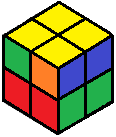
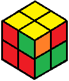
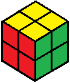

2x2 Beginner Tutorial
With the top all yellow, we will look along the sides of the top pieces for matching corners, just like we did in the second step.
If you have matching corners, turn the top so that they align with their color on the bottom layer. Put the matching corners (now a whole side) on the left side of the cube.

(turn top)

Now we use our old friend, the corner-switching algorithm:
(RU2R'U') (RU2L'U) (R'U'R)
(algorithm)

If there are no matching corners, simply use the algorithm to make some as before.
Congratulations! You are finished!
Want to get faster? My 2x2 intermediate tutorial shows you how to solve the cube more efficiently.
 Back
Back